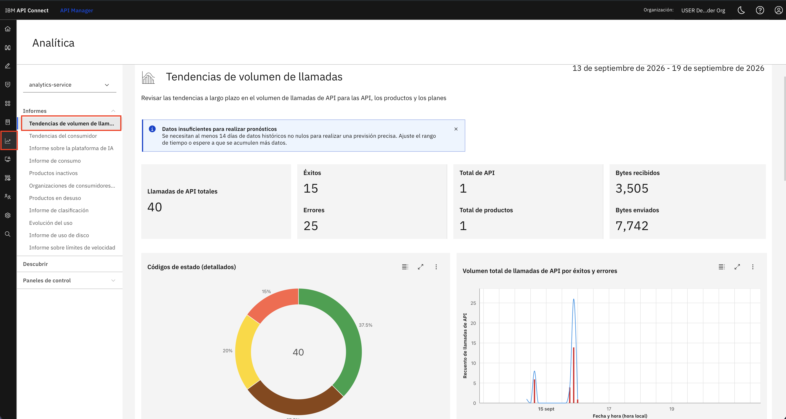
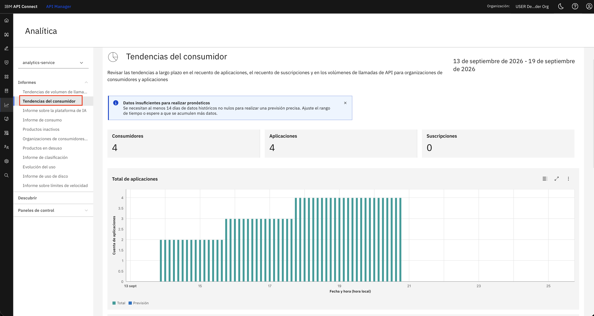
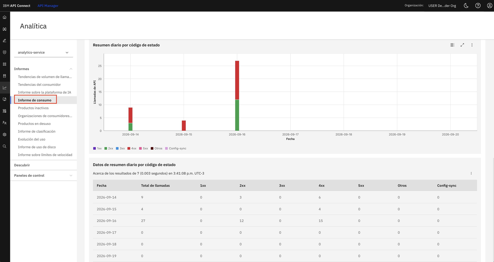
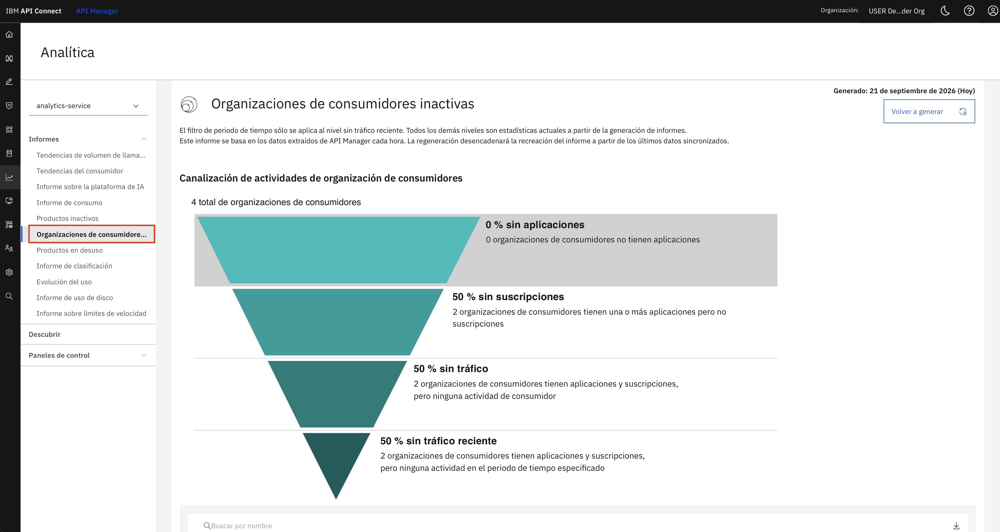
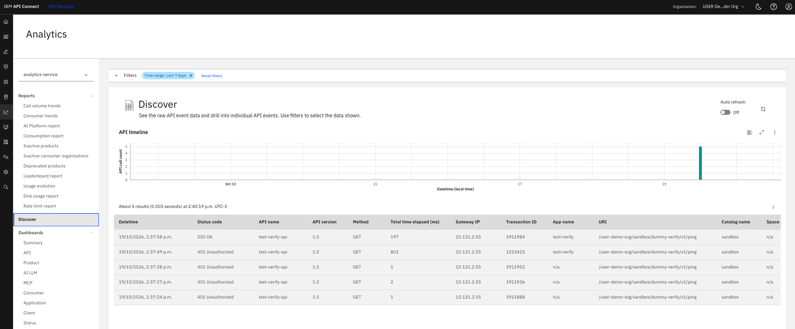
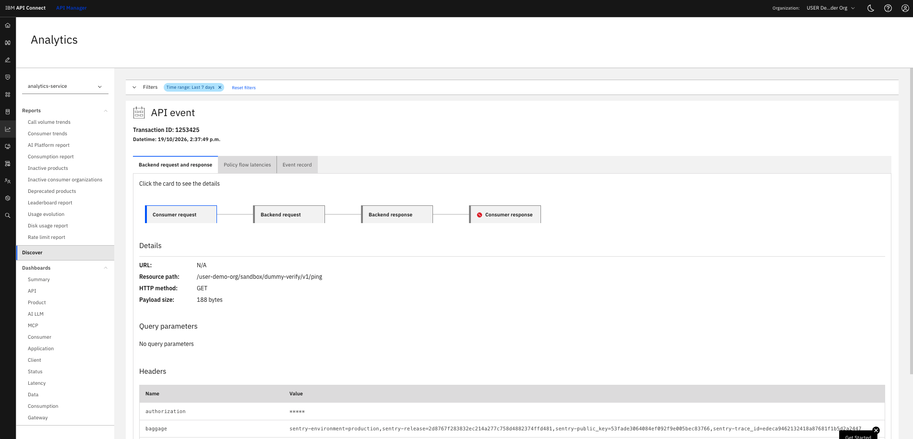
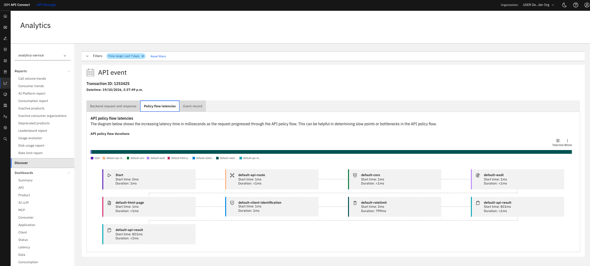
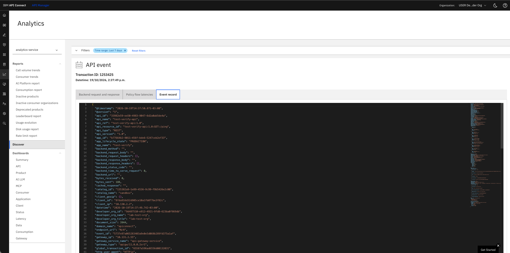
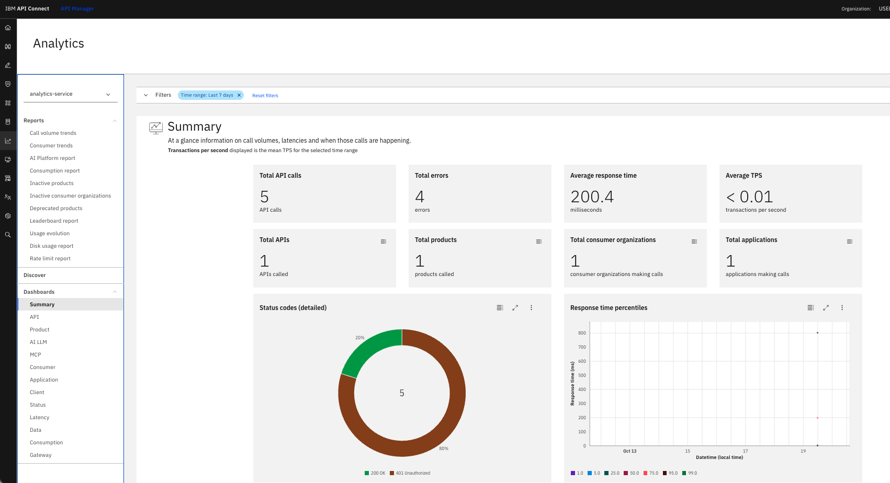

Contenido
¿Qué es la analítica en APIC?
Concepto clave: Módulo de Analítica
IBM API Connect recopila automáticamente datos de cada llamada que atraviesa el gateway y los expone a través del módulo de analítica integrado en la plataforma. No requiere instrumentación adicional en las APIs.
Desde la sección Analítica del API Manager, el administrador accede a informes preconfigurados organizados en tres categorías: Informes (vistas tabulares y de gráficos), Descubrir (exploración libre de eventos) y Paneles de control (dashboards personalizables).
Informes disponibles (selección)
Tendencias de volumen de llamadas · Tendencias del consumidor · Informe de consumo · Productos inactivos · Organizaciones de consumidores · Productos en desuso · Informe de clasificación · Evolución del uso · Informe de uso de disco · Informe sobre límites de velocidad
Datos capturados por llamada
API invocada · Producto y plan · Aplicación consumidora · Código de estado HTTP · Latencia y tiempo de respuesta · Bytes enviados y recibidos · Timestamp · Organización de consumidor
Reportes pre-definidos
Informe 1: Tendencias de volumen de llamadas
En el API Manager, hacé click en el ícono de analítica del menú lateral izquierdo (gráfico de barras). En el panel izquierdo, bajo Informes, seleccioná Tendencias de volumen de llamadas (Call volume trends).
Las tendencias de volumen de llamadas te dan una vista general de la actividad de tus APIs en el rango de tiempo que elijas. El reporte muestra el total de llamadas, cuántas fueron exitosas y cuántas fallaron, y el volumen de bytes enviados y recibidos.
Debajo de los KPIs, el gráfico de dona Códigos de estado (detallados) desglosa las llamadas por familia de código HTTP. El gráfico de líneas a la derecha muestra el volumen total por éxitos y errores en el tiempo.

En el mismo informe vas a encontrar otros KPIs: Bytes received y Bytes sent (volumen de datos recibidos y enviados), Breakdown by catalog (llamadas por catálogo), Response time percentiles (percentiles del tiempo de respuesta), API usage by product and API (uso de cada API agrupado por producto), Leaderboard for APIs, Products and Plans (ranking de APIs, productos y planes), Top consumer organizations (organizaciones consumidoras con más llamadas) y Top applications (aplicaciones con más consumo).
En la parte superior del panel izquierdo aparece el selector del servicio de analítica. Si tu organización tiene múltiples servicios configurados, podés cambiar entre ellos aquí. En el lab usamos analytics-service.
El aviso azul indica que se necesitan al menos 14 días de datos históricos no nulos para que APIC pueda generar una previsión de tendencia. Es normal en ambientes nuevos o con poco tráfico. El informe sigue siendo útil para el análisis del período actual.
Informe 2: Tendencias del consumidor
En el panel izquierdo, hacé click en Tendencias del consumidor (Consumer Trends). Este informe se enfoca en la evolución cómo evoluciona a largo plazo la actividad de los consumidores: el uso de aplicaciones, la cantidad de suscripciones y el volumen de llamadas a las APIs
El gráfico de barras Total de aplicaciones muestra la evolución diaria.. La línea de Previsión proyecta esa tendencia hacia adelante.

En la imagen hay 4 consumidores con 4 apps pero ninguna suscripción en este período. Los consumidores crearon apps pero aún no suscribieron a ninguna API. Este dato, cruzado con el informe de organizaciones inactivas, puede ayudarte a identificar quién necesita asistencia para completar el onboarding.
Informe 3: Informe de consumo
En el panel izquierdo, hacé click en Informe de consumo (Consumption Report). Este informe muestra las tendencias a largo plazo de las llamadas a las APIs que procesan los gateways. Te sirve para revisar cómo evoluciona ese volumen a lo largo del tiempo en el alcance que tengas seleccionado, algo clave para los datos que se necesitan en el licenciamiento basado en consumo.

El informe clasifica las llamadas en: 1xx (informativas), 2xx (éxitos), 3xx (redirecciones), 4xx (errores del cliente, como credenciales inválidas o recurso no encontrado), 5xx (errores del servidor) y Config-sync (tráfico interno de sincronización de configuración del gateway). En este ambiente, los errores 4xx son los más frecuentes en ambientes de laboratorio porque estuvimos probando APIs con credenciales incorrectas o sin suscripción activa.
Informe 4: Organizaciones de consumidores inactivas
En el panel izquierdo, bajo Informes, hacé click en Organizaciones de consumidores inactivas (Inactive consumer organizations). Este informe te muestra un embudo de actividad que segmenta a todas las organizaciones de consumidores según su nivel de inactividad.

El embudo muestra organizaciones de consumidores distribuidas en los siguientes niveles:
| Nivel del embudo | Descripción |
|---|---|
| Sin aplicaciones | Orgs que no tienen ninguna app registrada |
| Sin suscripciones | Orgs que tienen apps registradas pero ninguna suscripción a APIs |
| Sin tráfico | Orgs con apps suscriptas a APIs pero que no generaron llamadas |
| Sin tráfico reciente | Orgs con apps suscriptas a APIs pero sin actividad en el período analizado |
Este embudo es muy útil para gestionar el ciclo de vida de los consumidores. Permite identificar en qué paso del proceso (registro, suscripción, primer consumo) se están trabando los equipos y actuar proactivamente para desbloquearlos.
Otros informes
| Informe | Descripción |
|---|---|
| AI Platform Report | Analiza las tendencias a largo plazo del volumen de llamadas de los proveedores de AI Platform y de los consumidores de recursos de AI LLM y MCP. |
| Inactive Products | Identifica los productos sin suscripciones, sin tráfico o sin tráfico reciente. |
| Deprecated products with traffic | Muestra los productos deprecados que todavía reciben tráfico. Conviene migrar a esos consumidores a un plan de reemplazo. |
| Leaderboard report | Muestra datos de rendimiento ordenados en rankings para tus APIs, productos, planes, aplicaciones y más. |
| Usage evolution report | Hace un seguimiento de cómo cambian los productos, las APIs, los planes, las aplicaciones y las organizaciones consumidoras en un período de un año. |
| Disk usage report | Permite seguir y monitorear el uso de almacenamiento de las APIs, los productos, las aplicaciones y las organizaciones consumidoras. |
| Rate limit report | Permite monitorear las aplicaciones que se acercan a sus límites de tasa (rate limits) e identificar posibles problemas de throttling. |
Discovery
Linea de tiempo y detalle de las API Calls
Discovery te permite ver los datos en crudo de los eventos de API y examinar cada evento de forma individual. Podés aplicar filtros para refinar los resultados o inspeccionar un evento de API y enfocarte en los datos que te interesan.

Desde la interfaz podés acceder a un máximo de 10.000 eventos de API. En la vista de Discovery se pueden mostrar hasta 200 registros de eventos por página.
Podés personalizar las columnas que se muestran en la sección Filters. Para ordenar la tabla de forma ascendente o descendente, hacé click en el encabezado de la columna.
El gráfico de línea de tiempo se puede cambiar a un eje Y logarítmico, y podés exportar los datos del gráfico haciendo click en Actions, en la esquina superior derecha del gráfico.
Para exportar los datos de los eventos de API de la tabla, hacé click en Actions.
API Events
Al hacer clic en una llamada, podrás acceder a información detallada de ese evento. Podrás ver el detalle del request y response del backend, latencia de cada política implementada y el registro completo que IBM API Connect almacena de cada llamada.



Dashboards
Paneles de control
Los dashboards de analítica de la interfaz del API Manager muestran los datos de eventos de API en el alcance de la organización proveedora, catálogos y spaces.

Estos son los dashboards disponibles:
| Dashboard | Descripción |
|---|---|
| Summary | Información de un vistazo sobre los volúmenes de llamadas, las latencias y en qué momentos se hacen esas llamadas. |
| Consumption | Total de llamadas a las APIs procesadas por los gateways a lo largo del tiempo en ese alcance. Es necesario para el licenciamiento basado en consumo. |
| API | Todo lo que necesitás saber sobre qué APIs se están llamando y cuáles no. |
| Product | Qué productos son los más populares, tanto en total como a lo largo del tiempo. |
| AI LLM | Permite seguir la cantidad de tokens de IA y el uso de modelos, para ver cómo se están usando los servicios de IA. |
| MCP | Muestra quiénes usan más tus servicios de IA con MCP (Model Context Protocol), y permite seguir la cantidad y el uso de herramientas (tools) y prompts. |
| Consumer | Permite determinar qué organizaciones consumidoras hacen más llamadas a las APIs, en total y a lo largo del tiempo. |
| Application | Muestra qué aplicaciones son responsables de la mayor cantidad de llamadas a las APIs, en total y a lo largo del tiempo. |
| Client | Muestra quién llama a tus APIs y desde qué dispositivos. |
| Status | Información crítica sobre los éxitos y los fallos de las llamadas. Muestra las tasas de éxito y de falla a lo largo del tiempo, junto con el desglose por código de respuesta HTTP. |
| Latency | Muestra cuánto tardan las APIs en devolver una respuesta y cómo cambia esa latencia a lo largo del tiempo. |
| Data | Todo sobre los payloads de las requests y las responses. Muestra qué APIs, consumidores y aplicaciones generan los payloads más grandes. |
| Gateway | Volumen de llamadas y latencia de cada gateway en cada servicio de gateway. Sirve para saber si la carga se reparte de forma pareja o si algún gateway tiene bajo rendimiento. |
Podés exportar cada gráfico de un dashboard como imagen PNG o JPG. También podés exportar los datos de origen del gráfico como archivo JSON o CSV.
Verificación
Al finalizar este laboratorio deberías poder:
- Navegar a la sección Analítica del API Manager y seleccionar el
analytics-service. - Interpretar los KPIs del informe Tendencias de volumen de llamadas: totales, éxitos, errores y bytes.
- Leer el gráfico de dona de códigos de estado e identificar la proporción de errores vs éxitos.
- Analizar el informe Tendencias del consumidor para entender la evolución de apps y suscripciones.
- Usar el Informe de consumo para identificar picos de actividad y distribución de errores por día.
- Interpretar el embudo de organizaciones inactivas para detectar consumidores trabados en el proceso de onboarding.